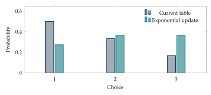

A learning rule redistributes attention among possible decisions. At each round, a decision receives a score, and the next probability table places more weight on decisions with higher scores. Exponential normalization provides such a rule. Its interpretation as a finite optimization problem follows from an exact relative-entropy identity.
Multiplicative weights
Let \(p_i>0\) be current probabilities and let \(s_i\) be scores assigned to the possible decisions. With intensity \(\eta>0\), define \[r_i=\frac{p_i e^{\eta s_i}}{Z},\qquad Z=\sum_jp_je^{\eta s_j}.\] This is the same algebraic rule used for exponential selection. In learning, \(p\) may describe attention, investment fractions in an abstract allocation problem, or probabilities of choosing experts. Scores may change from round to round. The rule is commonly called multiplicative weights or an exponential update.
The score units and the intensity enter only through the product \(\eta s_i\). A common score shift has no effect. For numerical computation, replace each score by \(s_i-s_{\max}\) before exponentiating. The common factor cancels and the largest exponent becomes zero, reducing the risk of overflow.
Example. Updating three choices
Let \(p=(1/2,1/3,1/6)\), \(s=(0,1,2)\), and \(\eta=\ln2\). The unnormalized weights are \((1/2,2/3,2/3)\) and \(Z=11/6\). The new table is \(r=(3/11,4/11,4/11)\). The third choice had the largest score but not the largest starting weight. Both enter the update.
An exact optimization identity
Suppose we seek a new table \(q\) that balances a high average score against changing the current table too much. One objective is \[J(q)=\eta\sum_iq_is_i-D(q\|p).\] The first term rewards the average score under \(q\). The second penalizes departure from \(p\). Larger \(\eta\) gives the score term more importance relative to the penalty.
From the update formula, \(\ln r_i=\ln p_i+\eta s_i-\ln Z\). Substitute this into \(D(q\|r)\): \[D(q\|r)=D(q\|p)-\eta\sum_iq_is_i+\ln Z.\] Rearranging gives \[J(q)=\ln Z-D(q\|r).\] Gibbs’ inequality now proves that \(J\) is uniquely maximized at \(q=r\), with value \(\ln Z\). This is a complete solution of the finite optimization problem. It does not require searching every candidate table or taking a derivative.
Proposition. The exponential update solves a KL-penalized problem
For a positive current table \(p\), finite scores, and positive intensity, the normalized exponential table is the unique maximizer of \(\eta q\cdot s-D(q\|p)\) over all probability vectors \(q\).
If some current probabilities vanish, a finite penalty permits only tables supported on those existing labels. The same proof works on that support. To allow a previously absent choice to reappear, one can first mix \(p\) with a positive reference table and then apply the update. That is an additional modeling operation.
Example. Comparing a candidate with the optimizer
Take \(p=(1/2,1/2)\), scores \((0,1)\), and \(\eta=\ln3\). Then \(r=(1/4,3/4)\) and \(Z=2\). The objective at \(r\) is \(\ln2\). At the unchanged table \(p\), it is \((1/2)\ln3\). Their difference is \(D(p\|r)=\ln2-(1/2)\ln3\approx0.1438\), exactly as the identity predicts.
Fixed scores improve their own average
Let the scores be fixed numbers \(c_i\) and apply an exponential update. The average score changes from \(\sum_i p_ic_i\) to \(\sum_i r_ic_i\). Subtracting gives \[\sum_i r_ic_i-\sum_i p_ic_i =\frac{\sum_i p_ic_ie^{\eta c_i}-(\sum_i p_ic_i)(\sum_jp_je^{\eta c_j})}{Z}.\] The numerator can be rearranged symmetrically: \[\frac12\sum_{i,j}p_ip_j(c_i-c_j)(e^{\eta c_i}-e^{\eta c_j}).\] Every term is nonnegative because the exponential is increasing. Therefore the fixed-score average never decreases. Equality holds precisely when all scores on the current support are equal.
This proof compares the same score table before and after the update. If the scores are recomputed from the state, the next table may be evaluated by different numbers, so this conclusion does not automatically apply to the recomputed average. The cyclic examples make that dependence concrete.
Repeated fixed-score updates have the explicit form \[p_{i,t}=\frac{p_{i,0}e^{t\eta c_i}}{\sum_jp_{j,0}e^{t\eta c_j}}.\] If one available choice has the uniquely largest score, its probability approaches one. If several available choices tie for largest score, their mutual ratios stay at their initial values while lower-scoring choices fade.

Finite rounds and accumulated scores
Suppose round \(t\) assigns scores \(s_{i,t}\). Repeating the multiplicative rule gives \[p_{i,T}=\frac{p_{i,0}\exp\bigl(\eta\sum_{t=0}^{T-1}s_{i,t}\bigr)}{ \sum_jp_{j,0}\exp\bigl(\eta\sum_{t=0}^{T-1}s_{j,t}\bigr)}.\] All intervening normalizing constants cancel. If the score sequence is specified in advance, only the accumulated scores determine the final distribution. Intermediate distributions still depend on their order. When scores respond to decisions made during the run, changing the order can also change the scores themselves.
Example. Two rounds of evidence
Start with equal probabilities on three hypotheses. Two observations have likelihood tables proportional to \((2,1,1)\) and \((1,3,1)\). Multiplication gives posterior weights \((2,3,1)\), hence probabilities \((1/3,1/2,1/6)\). Taking scores to be logarithms of the likelihoods and setting \(\eta=1\) makes each Bayesian reweighting an exponential update.
Moving deliberately toward higher entropy
Let \(u\) be uniform and choose \(0<\lambda\leq1\). The mixture rule \(p^+=(1-\lambda)p+\lambda u\) raises entropy. Indeed, concavity gives \[H(p^+)\geq(1-\lambda)H(p)+\lambda H(u)\geq H(p).\] The second inequality uses the maximality of uniform entropy. Relative entropy to uniform contracts at the same time because \(D(p\|u)=\ln k-H(p)\) and the mixture admits direct bounds. This is a finite entropy-seeking rule with a transparent interpretation: each round replaces a fixed fraction of the current table with a uniform allocation.
The geometric course connection is that the penalty \(D(q\|p)\) measures change using probability tables themselves, while the scores choose a preferred direction. The exact optimizer supplies a useful finite update. Its relationship with infinitesimal gradient methods belongs to a later course; the finite identity already explains the present rule completely.
Quantifying what an update has gained
The exact optimization identity gives more than the optimizer. Compare its objective with that of keeping the current table \(p\). Since \(D(p\|p)=0\), the old objective is \(J(p)=\eta p\cdot s\). The gain is \[J(r)-J(p)=\ln Z-\eta p\cdot s=D(p\|r).\] Thus the improvement is itself a directed relative entropy. Comparing the new objective expression \(J(r)=\eta r\cdot s-D(r\|p)\) with the old one gives the further identity \[\eta(r-p)\cdot s=D(r\|p)+D(p\|r).\] Both terms on the right are nonnegative. For a single update, the average of the scores used in that update must improve, unless it stays unchanged. The two directions of KL appear together because the calculation compares the tables in both roles.
Example. Both directed costs in a binary step
For \(p=(1/2,1/2)\), scores \((0,1)\), and \(\eta=\ln3\), the update is \(r=(1/4,3/4)\). Its average score rises by \(1/4\). Multiplying by \(\ln3\) gives approximately \(0.2747\). The two divergences are approximately \(0.1308\) and \(0.1438\), and their sum is the same value. The identity checks the update and clarifies the contribution of each directed discrepancy.
How concentrated can an update become?
Let \(s_{\min}\) and \(s_{\max}\) be the smallest and largest scores on the support of \(p\). Since \(Z\) is a weighted average of their exponentials, \[e^{\eta s_{\min}}\leq Z\leq e^{\eta s_{\max}}.\] For any two available labels, \(r_i/r_j=(p_i/p_j)e^{\eta(s_i-s_j)}\). This ratio provides a direct way to understand intensity: increasing \(\eta\) magnifies score differences while preserving the contribution of the starting ratios.
For a uniquely highest fixed score at label \(m\), divide the fixed-score solution’s numerator and denominator by \(e^{t\eta c_m}\). Every other contribution contains \(e^{-t\eta(c_m-c_j)}\), which approaches zero. The leading probability therefore approaches one. If several labels tie, divide by their common leading factor instead. Their initial weights remain in the denominator and determine the final ratios within the tied set.
Updating from likelihoods
Suppose a hypothesis label \(i\) has prior probability \(p_i\), and an observation \(y\) has conditional likelihood \(L_i=P(y\mid i)\). The joint probability of hypothesis and observation is \(p_iL_i\). Adding over hypotheses gives \(P(y)=\sum_i p_iL_i\). Conditional probability then gives \[P(i\mid y)=\frac{p_iL_i}{\sum_jp_jL_j}.\] This is Bayes’ rule for a finite hypothesis set. If all likelihoods are positive, set \(s_i=\ln L_i\) and \(\eta=1\) to obtain the exponential update exactly.
Example. Posterior odds from one observation
Two hypotheses have prior probabilities \(1/3\) and \(2/3\). A positive test result has likelihoods \(3/4\) and \(1/4\) under the hypotheses. The unnormalized posterior weights are \(1/4\) and \(1/6\), with total \(5/12\). The posterior is \((3/5,2/5)\). Prior odds \(1/2\) have been multiplied by likelihood ratio \(3\), producing posterior odds \(3/2\).
For several observations, multiplication of likelihoods is justified when they are conditionally independent given the hypothesis. The condition concerns independence within each hypothesis model. Without it, a joint likelihood or sequential conditional likelihoods must replace the simple product.
Exercises
- Compute the exponential update of \(p=(1/4,1/4,1/2)\) with scores \((2,1,0)\) and \(\eta=\ln2\).
- Verify directly that adding a common constant to all scores leaves the update unchanged.
- Derive the identity \(J(q)=\ln Z-D(q\|r)\), stating where the condition \(\sum_iq_i=1\) is used.
- For \(p=(1/2,1/2)\), scores \((0,1)\), and \(\eta=\ln3\), evaluate the objective at \(q=(0,1)\) and compare it with its maximum.
- Derive the symmetric double-sum formula for the fixed-score improvement.
- Starting with equal weights on three choices, fixed scores \((0,1,1)\), and \(\eta=\ln2\), find the probabilities after four rounds.
- Repeat Exercise 6 with initial weights \((1/2,1/3,1/6)\). Explain the ratio of the two tied leaders.
- Give a two-round score sequence whose final distribution agrees when its rounds are reversed, but whose intermediate distribution changes.
- Explain why a zero current probability stays zero under multiplicative weights. Describe a mixture operation that permits it to become positive.
- Show that mixing with uniform strictly raises entropy whenever \(p\) is not uniform and \(0<\lambda<1\).
- A program reports overflow when exponentiating scores \((1000,1001,999)\). Explain how subtracting the largest score resolves this without changing the answer.
- Choose a small finite set of candidate tables and verify the optimization identity numerically for each. Explain why this check illustrates the theorem but does not replace its proof.
Selected exercise solutions
1. The unnormalized entries are \((1,1/2,1/2)\), giving \((1/2,1/4,1/4)\).
3. The term \(\ln Z\) is multiplied by \(\sum_iq_i\), which equals one. All other terms combine by the logarithm identities.
4. At \(q=(0,1)\), \(J=\ln3-\ln2=\ln(3/2)\). The maximum is \(\ln2\), larger by \(\ln(4/3)=D(q\|r)\).
6. The weights are proportional to \((1,16,16)\), giving \((1/33,16/33,16/33)\).
7. The unnormalized weights are \((1/2,16/3,8/3)\), so the probabilities are \((1/17,32/51,16/51)\). The leaders retain their initial \(2:1\) ratio.
11. Use exponents \((-1,0,-2)\) instead. Both numerator and denominator have been divided by \(e^{1001}\), which cancels exactly.